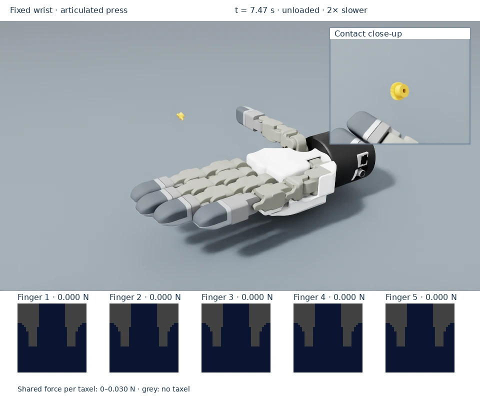

Press a stationary gear
See how joint motion creates and releases tactile contact. Finger 2 bends against the fixed gear while the wrist and object stay in place.


The camera inset makes the 8.25 mm gear contact visible without enlarging the object in the simulation. During hold, only finger 2’s frame is active; after release all five frames return to zero.
Run the example
Prerequisites: activate the installed environment.
The command below uses remote streaming; omit --livestream=2 on a local desktop.
MPLBACKEND=Agg python scripts/dex01_stationary_press.py --livestream=2
The wrist remains fixed. Finger 2’s MCP, PIP and DIP flexion joints are driven with actuator position targets to bend the fingertip toward the stationary gear, hold contact, then extend back to rest. The original fixed-base hand is used; there is no sliding fixture. Setup samples an articulated endpoint to place the gear against the pad and orient its face to the endpoint surface normal. Runtime motion uses joint targets, not joint-state or root-pose teleportation.
The GUI shows the fixed wrist, visible finger articulation, measured loads in newtons and firmware contact footprints. The force is read from PhysX and redistributed across penetrating taxels. Joint gains and endpoint fractions are simulation demo settings, not DG-5F hardware specifications.
Run three cycles and independently verify wrist/object invariance, actual joint movement, fingertip travel, contact, mapping and release:
MPLBACKEND=Agg python scripts/dex01_stationary_press.py \
--livestream=2 \
--max-steps 900 \
--verification-report /tmp/dex01-articulated.json
python scripts/dex01_stationary_press.py \
--check-report /tmp/dex01-articulated.json
--press-time-scale controls the physical joint trajectory timing. The default
cycle is 2.5 simulation seconds; observed duration depends on host performance. The target
force is a contact-seeking threshold, not guaranteed force tracking. A small
gear’s individual teeth may not resolve in the sparse fingertip contact patch.
The existing flat-pad example is suited to viewing broader object footprints.